Let
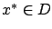
be a local minimum of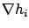
,
Instead of line segments containing  which we used in the
unconstrained case, we now
consider curves in
which we used in the
unconstrained case, we now
consider curves in  passing through
passing through  . Such a curve is
a family of points
. Such a curve is
a family of points
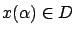
parameterized by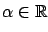
, with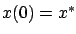
. We require the function
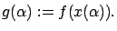
Note that when there are no equality constraints, functions of the form (1.4) considered previously can be viewed as special cases of this more general construction. From the fact that 0 is a minimum of
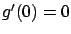
. To interpret this result in terms of
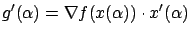
which for
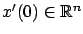
is an important object for us here. From the first-order Taylor expansion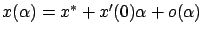
we see that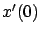
defines a linear approximation of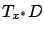
. (We can think of this space as having its origin at
We want to have a more explicit characterization of the tangent space
,
which will help us understand it better. Since
 was defined as the set of points satisfying the equalities (1.18),
and since the points
was defined as the set of points satisfying the equalities (1.18),
and since the points  lie in
lie in  by construction,
we must have
by construction,
we must have
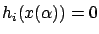
for all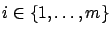
. Differentiating this formula gives
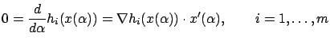
for all
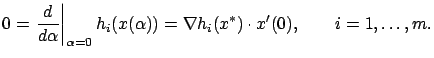
We have shown that for an arbitrary
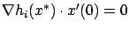
for each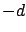
(going from to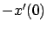
corresponds to reversing the direction of the curve).Now let us go back to (1.19), which says that
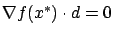
for all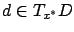
(since the curve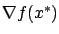
and expressed by (1.21) looks somewhat clumsy, since checking it involves a search over
Claim: The gradient of  at
at  is a linear combination of the
gradients of the constraint functions
is a linear combination of the
gradients of the constraint functions
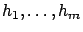
atIndeed, if the claim is not true, then has a component orthogonal to span
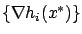
, i.e, there exists a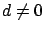
such that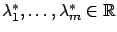
. Taking the inner product with
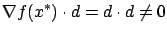
and we reach a contradiction with (1.21).
Geometrically, the claim says that
is normal to  at
at  .
This situation is illustrated in Figure 1.5 for the case
of two constraints in
.
This situation is illustrated in Figure 1.5 for the case
of two constraints in
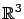
. Note that if there is only one constraint, say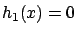
, then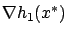
, the normal direction to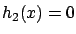
is added,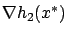
, i.e., the normal plane to
The condition (1.22) means that there exist real numbers
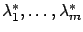
such thatThe above proof of the first-order necessary condition for constrained optimality involves geometric concepts. We also left a gap in it because we did not prove the converse implication in the equivalent characterization of the tangent space given by (1.20). We now give a shorter alternative proof which is purely analytic, and which will be useful when we study problems with constraints in calculus of variations. However, the geometric intuition behind the previous proof will be helpful for us later as well. We invite the reader to study both proofs as a way of testing the mathematical background knowledge that will be required in the subsequent chapters.
Let us start again by assuming that  is a local minimum of
is a local minimum of  over
over  , where
, where
 is a surface in
is a surface in
 defined by the equality constraints (1.18) and
defined by the equality constraints (1.18) and  is
a regular point of
is
a regular point of  .
Our
goal is to rederive the necessary condition expressed by (1.25).
For
simplicity, we only give the argument for
the case of a single constraint
.
Our
goal is to rederive the necessary condition expressed by (1.25).
For
simplicity, we only give the argument for
the case of a single constraint
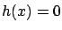
, i.e.,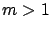
is straightforward (see Exercise 1.3 below). Given two arbitrary vectors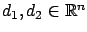
, we can consider the following map from to itself:
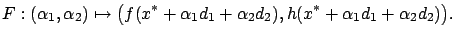
The Jacobian matrix of
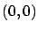
is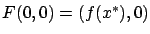
on which the map
Regularity of  in the present case just means that the gradient
is nonzero.
Choose a
such that
. With this
fixed, let
,
so that
. Since the matrix (1.26) must be singular for all choices of
, its first row must be a constant multiple of its second row (the second row being nonzero by our choice of
). Thus we have
, or
, and this must be true for all
It follows that
, which proves (1.25) for the case when
in the present case just means that the gradient
is nonzero.
Choose a
such that
. With this
fixed, let
,
so that
. Since the matrix (1.26) must be singular for all choices of
, its first row must be a constant multiple of its second row (the second row being nonzero by our choice of
). Thus we have
, or
, and this must be true for all
It follows that
, which proves (1.25) for the case when  .
.
The first-order necessary condition for constrained optimality
generalizes the corresponding result we derived
earlier for the unconstrained case.
The condition (1.25) together with
the constraints (1.18) is a system of
equations in
unknowns:  components of
components of  plus
plus
 components of the Lagrange multiplier vector
. For
, we recover
the condition (1.11)
which consists of
components of the Lagrange multiplier vector
. For
, we recover
the condition (1.11)
which consists of  equations in
equations in
 unknowns.
To make this relation even more explicit, consider the function
defined by
unknowns.
To make this relation even more explicit, consider the function
defined by
The idea of passing from constrained minimization of the original cost function to
unconstrained minimization of the augmented cost function is due to Lagrange.
If
is a minimum of
, then
we must
have
(because otherwise we could decrease
by changing  ), and subject to these constraints
), and subject to these constraints
 should minimize
should minimize  (because otherwise it would not minimize
). Also, it is clear that (1.28) must hold. However,
it does not follow that (1.28) is a necessary condition
for
(because otherwise it would not minimize
). Also, it is clear that (1.28) must hold. However,
it does not follow that (1.28) is a necessary condition
for  to be a constrained minimum of
to be a constrained minimum of  . Unfortunately, there is no quick way to
derive the first-order necessary condition for constrained optimality by
working with the augmented cost--something that Lagrange originally attempted to
do. Nevertheless, the basic form of the augmented cost function (1.27)
is fundamental in constrained optimization theory, and will
reappear in various forms several times in this book.
. Unfortunately, there is no quick way to
derive the first-order necessary condition for constrained optimality by
working with the augmented cost--something that Lagrange originally attempted to
do. Nevertheless, the basic form of the augmented cost function (1.27)
is fundamental in constrained optimization theory, and will
reappear in various forms several times in this book.
Even though the condition in terms of Lagrange multipliers is only necessary and not sufficient for constrained optimality, it is very useful for narrowing down candidates for local extrema. The next exercise illustrates this point for a well-known optimization problem arising in optics.